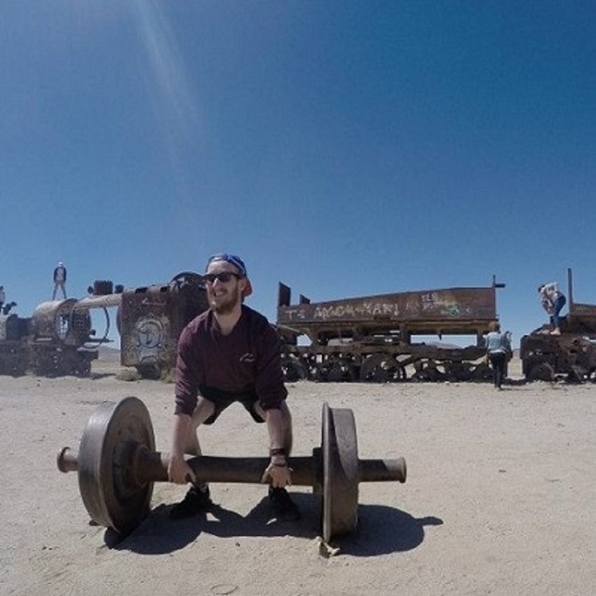
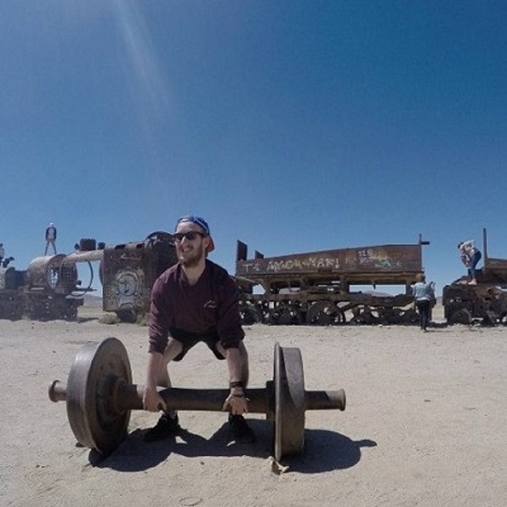

hey guys, Joel Roberts here and i am the first member of the team that i shall be introducing you to. I'm 18 years
old and am currenlty making this website using the knowledge and skills that i have learned from the first term of web development in order
to achieve a good grade. So far i have found the first term of web dev quite intersesting as well as fun and am keen to see
what the rest of the year has in store for me.
This sexy loung fella is Mike Duffin and he is the second member of the team that i will be introducing you to. This young man has opte to
do the same course as me (web tech security) and with regards to this specific project, he was the main contibuter when it came to making the video below about good examples of user interface design as he was the one who wrote the script for the video as well as edit it,
well... when he wasnt out getting hammered that is...
Finally, we have the worlds strongest man, also known as Elliot Garner and he is the final member of the team that i will be intorducing you to.
This man was very helpful in terms of giving me inspiration as to how my website should look.
 
